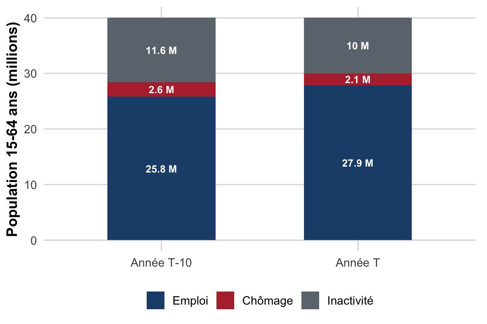

TD 2 : Définitions & mesures du marché du travail
Population active, taux d’activité/emploi/chômage, BIT vs France Travail, halo du chômage
Dossier de TD : QCM de définitions, lecture d’un article de presse et de chiffres INSEE, exercice analytique avec construction d’un graphique, question de réflexion.
Objectifs de la séance
À l’issue de ce TD, vous saurez :
- Définir précisément population active, taux d’activité (participation), taux d’emploi et taux de chômage, et calculer chacun de ces indicateurs à partir de données brutes.
- Distinguer la mesure du chômage par l’INSEE (au sens du BIT) de celle de France Travail (ex-Pôle Emploi), et savoir pourquoi les deux chiffres divergent.
- Expliquer ce que recouvre le halo du chômage et pourquoi le taux de chômage seul peut donner une image incomplète du marché du travail.
- Lire et interpréter un tableau ou un article de presse mobilisant des statistiques du marché du travail (INSEE, France Travail).
Pré-requis : avoir lu la section 1.3 (« Mesurer le marché du travail ») du résumé du Chapitre II. Aucun calcul ne dépasse le niveau collège (pourcentages, règle de trois) : la difficulté est conceptuelle, pas arithmétique.
Exercice 1 : QCM : définitions et mesures
Pour chaque question, une seule réponse est exacte. Justifiez votre choix en une phrase : la justification compte autant que la bonne réponse le jour du CC.
Question 1. Comment définit-on la population active au sens du BIT ?
- L’ensemble des personnes en âge de travailler.
- L’ensemble des personnes en emploi.
- La somme des personnes en emploi et des chômeurs au sens du BIT.
- L’ensemble des personnes inscrites à France Travail.
Question 2. Quel indicateur mesure le pourcentage de la population en âge de travailler qui est effectivement en emploi ?
- Le taux de chômage
- Le taux d’emploi
- Le taux d’activité
- Le taux de non-emploi
Question 3. Quels sont les trois critères que doit remplir simultanément une personne pour être comptée comme chômeur au sens du BIT par l’INSEE ?
- Être inscrite à France Travail, indemnisée, et sans emploi.
- Être sans emploi, disponible pour travailler sous deux semaines, et à la recherche active d’un emploi.
- Être sans emploi depuis plus de 12 mois et indemnisée par l’assurance chômage.
- Être en âge de travailler, résider en France, et ne pas être étudiant.
Question 4. Pourquoi le nombre de demandeurs d’emploi publié par France Travail diffère-t-il structurellement du nombre de chômeurs BIT publié par l’INSEE ?
- France Travail sous-estime toujours le chômage par rapport à l’INSEE.
- Le chiffre France Travail repose sur une inscription administrative (catégories A à E), tandis que le chiffre INSEE repose sur une enquête standardisée appliquant les trois critères du BIT : les deux populations ne se recouvrent pas exactement.
- L’INSEE et France Travail utilisent exactement la même définition, seule la fréquence de publication diffère.
- France Travail ne mesure que le chômage des jeunes de moins de 25 ans.
Question 5. Si le taux de chômage est de 6 % et le taux d’emploi de 58 % (tous deux rapportés à la population en âge de travailler), quel est le taux d’inactivité de cette population ?
- 6 %
- 36 %
- 58 %
- 94 %
Question 6. Laquelle de ces situations relève du halo du chômage plutôt que du chômage BIT au sens strict ?
- Une personne sans emploi, qui postule activement chaque semaine et peut commencer dans les deux semaines.
- Une personne en CDI à temps plein, satisfaite de son poste.
- Une personne sans emploi, qui souhaiterait travailler mais ne peut pas être disponible avant un mois pour des raisons familiales, et qui de ce fait n’est pas comptée comme chômeur BIT.
- Un retraité qui ne recherche pas d’emploi.
Question 7. Une baisse du taux de chômage d’un trimestre à l’autre peut-elle s’accompagner d’une dégradation du marché du travail ?
- Non, une baisse du taux de chômage est toujours un signal univoque d’amélioration.
- Oui, si elle résulte d’une baisse de la population active (chômeurs découragés qui cessent de chercher un emploi) plutôt que de créations d’emplois.
- Non, car le taux de chômage et le taux d’emploi évoluent toujours dans le même sens.
- Oui, mais uniquement si le PIB est en récession.
Question 8. Le sous-emploi (temps partiel subi) fait-il partie de la population des chômeurs au sens du BIT ?
- Oui, systématiquement.
- Non : ces personnes sont en emploi (elles travaillent), donc classées actives occupées, mais elles relèvent du sous-emploi, une forme de sous-utilisation de la main-d’œuvre distincte du halo, car elles souhaiteraient travailler davantage.
- Non, elles sont classées comme inactives.
- Cela dépend uniquement de leur âge.
Exercice 2 : Lecture de données : la presse économique et les chiffres du chômage
NoteDocument : Marché du travail : coup d’arrêt à la baisse du chômage
D’après Laurent Jeanneau, Alternatives Économiques, 11 août 2023 (lien).
« Selon les chiffres publiés ce vendredi par l’Insee, le nombre de chômeurs est reparti à la hausse au deuxième trimestre 2023 : + 20 000 personnes par rapport au trimestre précédent, portant le nombre officiel de chômeurs à 2,2 millions de personnes en France. […] Le taux de chômage, lui, est resté quasi stable (+0,1 point), à 7,2 % de la population active. […] Autre chiffre préoccupant : le halo autour du chômage est reparti à la hausse. […] On parle tout de même de 1,9 millions de personnes, soit presque autant que le nombre officiel de chômeurs. […] Or la part du halo dans la population est passée de 4,4 % il y a un an à 4,7 % au deuxième trimestre 2023. […] Troisième et dernier obstacle sur le chemin du plein-emploi : la hausse de la population active, notamment au quatrième trimestre, sous l’effet de la réforme des retraites qui va entrer en vigueur progressivement à partir de septembre. »
Chiffres clés extraits de l’article (2ᵉ trimestre 2023) :
| Indicateur | Valeur |
|---|---|
| Chômeurs au sens du BIT | 2,2 millions |
| Taux de chômage | 7,2 % |
| Halo du chômage | 1,9 million de personnes |
| Part du halo dans la population (15-64 ans) | 4,7 % |
Questions
- À partir du nombre de chômeurs (2,2 millions) et du taux de chômage (7,2 %), retrouvez, par un calcul, l’ordre de grandeur de la population active française au 2ᵉ trimestre 2023.
- À partir du nombre de personnes dans le halo (1,9 million) et de sa part dans la population (4,7 %), retrouvez l’ordre de grandeur de la population des 15-64 ans. Comparez ce nombre à la population active trouvée en (1) : que représente l’écart ?
- En quoi le halo du chômage (1,9 million de personnes) est-il conceptuellement différent des 2,2 millions de chômeurs BIT ? Pourquoi l’article les mentionne-t-il l’un à côté de l’autre ?
- L’article évoque une hausse de la population active « sous l’effet de la réforme des retraites ». En reprenant la formule du taux de chômage, expliquez pourquoi une hausse de la population active peut, toutes choses égales par ailleurs, faire mécaniquement remonter le taux de chômage, même sans aucune destruction d’emploi.
- D’après l’article, citez deux indicateurs avancés (autres que le taux de chômage lui-même) que l’auteur mobilise pour anticiper un retournement du marché du travail. Pourquoi ces indicateurs sont-ils qualifiés d’« avancés » ?
Exercice 3 : Exercice analytique : calculer et représenter la structure du marché du travail
Le tableau ci-dessous donne des valeurs indicatives (ordres de grandeur inspirés des données INSEE, arrondis pour l’exercice) décrivant la population des 15-64 ans en France à deux dates : une année de référence notée \(T-10\) et l’année la plus récente notée \(T\).
| Indicateur | Année \(T-10\) | Année \(T\) |
|---|---|---|
| Population des 15-64 ans | 40,0 millions | 40,0 millions |
| Population active | 28,4 millions | 30,0 millions |
| dont emplois | 25,8 millions | 27,9 millions |
| dont chômeurs (BIT) | 2,6 millions | 2,1 millions |
Questions
- Calculez, pour chacune des deux années, le taux d’activité, le taux d’emploi et le taux de chômage. Présentez vos résultats dans un tableau à trois lignes et deux colonnes.
- La population active a augmenté de \(T-10\) à \(T\). Le taux de chômage a-t-il pour autant baissé pour de « mauvaises » raisons (effet de découragement) ou pour de « bonnes » raisons ? Justifiez à partir de vos calculs.
- Calculez le nombre d’inactifs à chaque date. Comment évolue le taux d’inactivité entre \(T-10\) et \(T\) ? Proposez une explication économique plausible (au moins un déterminant vu en cours : activité féminine, âge de la retraite, durée des études…).
- Construction du graphique. Le chunk R ci-dessous représente la décomposition de la population des 15-64 ans en trois catégories (emploi, chômage, inactivité) aux deux dates. Vérifiez, à l’aide de vos calculs de la question 1, que les hauteurs relatives des trois segments de chaque barre sont cohérentes avec les taux que vous avez obtenus.
- En vous appuyant sur le graphique, expliquez pourquoi deux personnes qui « sortent » du segment inactivité peuvent avoir des effets opposés sur le taux de chômage (l’une rejoint directement l’emploi, l’autre rejoint le chômage en cherchant activement un emploi sans en trouver immédiatement).
Exercice 4 : Question de réflexion (dissertation courte, 15-20 lignes)
« Une baisse du taux de chômage est toujours une bonne nouvelle pour le marché du travail. »
Discutez cette affirmation en mobilisant précisément les notions suivantes : taux d’activité, taux d’emploi, halo du chômage, chômage de longue durée. Votre réponse devra :
- rappeler la définition du taux de chômage et montrer qu’il s’agit d’un rapport (donc sensible à des variations du numérateur et du dénominateur) ;
- proposer au moins un scénario concret dans lequel le taux de chômage baisse alors que la situation du marché du travail se dégrade ;
- conclure sur les indicateurs complémentaires qu’un économiste devrait regarder avant de se prononcer sur l’état du marché du travail.
AstucePour aller plus loin
- Vidéo « Comment mesure-t-on le chômage ? », Dessine-moi l’éco : https://www.youtube.com/watch?v=0AJLLsL2mZg. Reprend en 4 minutes la distinction INSEE/BIT vs France Travail.
- INSEE, Informations rapides : statistiques trimestrielles du chômage au sens du BIT, insee.fr (rubrique Emploi-Chômage-Revenus). Comparez le dernier chiffre publié à celui de l’article étudié en Exercice 2.
- France Travail (ex-Pôle Emploi), statistiques mensuelles des demandeurs d’emploi par catégorie (A à E), utile pour l’Exercice 1, question 4.
- Relisez la section 1.3 du résumé du Chapitre II, notamment le tableau comparant deux pays au même taux de chômage mais à des taux d’emploi très différents.